GOATz KIDZ (New) GOATz 于 2021 年 7 月推出，是有史以来第一个通货紧缩的 PFP NFT，它使所有者能够通过名为 The Forge 的流程自定义其 NFTS。GOATz 的稀缺性一直在增加，而艺术
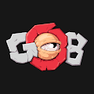 GOB Stands With Ukraine 一款数字收藏纸牌游戏，让 Goon 派系相互竞争以赢得 $GOB 代币奖励。建立一个有竞争力的 Goon Card 牌组，在排行榜上崛起！无条件免费访问、畅玩和体验游戏。然而，当
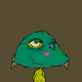 Goblin Bby ▶ 什么是Goblin Bby？Goblin Bby 是一个 NFT（非同质代币）集合。存储在区块链上的数字艺术品集合。 ▶ 有多少个 Goblin Bby 代币？总共有 2,898 个 Goblin Bby
Goblin Beaches Goblin Beaches 于 2022 年 6 月 3 日首次铸造。现在轮到所有 goblinsszZ 的 goblin beachezz 了。instatttntt beeach reeveaaal。1 #freemint 海滩妖精。6 海滩地精掉落 9 次抽奖 69 地精海
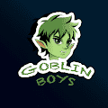 Goblin Boys Goblin Boys 是由 khronos 制作的原创且独特的 5,555 个头像系列。 Reveal at UTC 15:00 May 26, 2022，不要错过Twitter Space上的 Reveal Party。 ▶ 什么是哥布林男孩？ Goblin Boys 是
Goblin Chest Mint Pass Goblin Chest Mint Pass 于 2022 年 8 月 5 日首次铸造。我们目前正在追踪流通中的 4,672 个未烧毁或质押的 Goblin Chest Mint Pass 代币。我们还没有索引任何独特的特征对，请稍后再回来查看！购
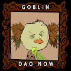 goblin DAO goblin DAO 于 2022 年 6 月 3 日首次铸造。我们目前正在追踪流通中的 1,024 个未销毁或质押的地精 DAO 代币。 我们为 goblin DAO 索引了 69 个独特的特征对。购买 goblin DAO 最常见的地方包括
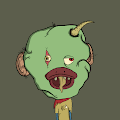 Goblin Ducks ▶ 什么是地精鸭？Goblin Ducks 是一个 NFT（非同质代币）集合。存储在区块链上的数字艺术品集合。 ▶ 哥布林鸭代币有多少？总共有 555 个 Goblin Ducks NFT。目
GobliN freNs GobliN freNs 是一个 NFT（非同质代币）集合。存储在区块链上的数字艺术品集合。总共有 1,165 个 Goblin freNs NFT。目前 95 位所有者的钱包中至少有一个 GobliN freNs NTF。AAA
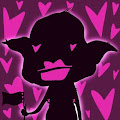 goblin-btchz ▶ 什么是 Goblin Btchz ？Goblin Btchz 是一个 NFT（Non-fungible token）集合。存储在区块链上的数字艺术品集合。 ▶ 有多少个 Goblin Btchz 代币？总共
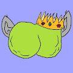 goblinass.wtf goblinpisswtf NFT 在过去 7 天内售出 17 次。goblinpisswtf 的总销售额为 11.86 美元。一个 goblinpisswtf NFT 的平均价格为 0.7 美元。共有 3,834 个 goblinpisswtf 所有者，拥有总供应量 9,998 个代币。
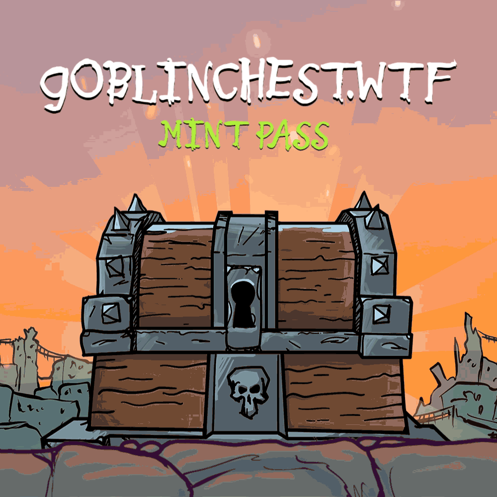 goblinchest.wtf MintPass AAAAUUUUUUGGGGHH 地精 goblIIinns。AAAAAAUUUUGGGHHHH H gobblins goblinns GOBLINNNNNNNns wekm ta goblintown yoo sniksnakr DEJEN RATS oooooh 老鼠是 yummmz 是 da BLOKCHIN wat 上的 NEFTEEE O GOBBLINGS？哦。cru
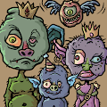 GoblinClan NFT Official 当您可以建立一个 CLAN 时，为什么要满足于一个地精？ 7,777 个地精家族，准备接管以太坊区块链。 是的…有史以来第一个有 3 个字符的 PFP！为什
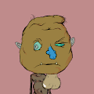 goblindeeznuts AAAAUAAUUGGGHHH DIEEZ NOOOOTS AHAHHUHAUHAH GJOOTEEEEEMIEMIMEIEEMMM .. FERST 2222 是免费的！即时狂欢。goblindeeznuts 于 2022 年 6 月 2 日首次铸造。我们目前正在追踪流通中的 5,420 个尚未被销毁或质押的 goblindeeznuts 代币
goblindungeon.wtf goblindungeon.wtf 是一个 NFT（Non-fungible token）集合。存储在区块链上的数字艺术品集合。goblindungeon.wtf NFT 在过去 7 天内售
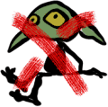 goblinslayer goblinslayer 是一个 NFT（Non-fungible token）集合。存储在区块链上的数字艺术品集合。总共有 10,000 个哥布林杀手 NFT。目前，4,677 位所有
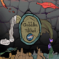 goblinticket ▶ 什么是goblinticket？goblinticket 是一个 NFT（非同质代币）集合。存储在区块链上的数字艺术品集合。 ▶ 有多少个 goblinticket 代币？
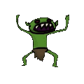 GoblinTown ▶ 什么是哥布林镇？GoblinTown 是一个 NFT（非同质代币）集合。存储在区块链上的数字艺术品集合。 ▶ 有多少个 GoblinTown 代币？总共有 1,995 个 GoblinTown NFT。
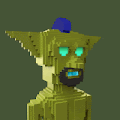 Goblintown 3D ▶ 什么是哥布林镇 3D？Goblintown 3D 是一个 NFT（非同质代币）集合。存储在区块链上的数字艺术品集合。 ▶ 有多少个 Goblintown 3D 代币？总共有 8,888 个 Goblintown
Hnomics Hnomics 项目与 Health 和 Economics 相结合，是一个在室内外运动或日常生活中根据心率进行奖励的项目，是一个 H2E（Heart beats to Earn）系统，以四种独特的 NFT 模型进
Invisible Friends Official 项目网站、社交联系方式、项目介绍内容详见： 不靠谱的朋友官方是一个NFT （不可替代令牌）集合。存储在区块链上的数字艺术品集合。 总共有 8 个 不靠谱
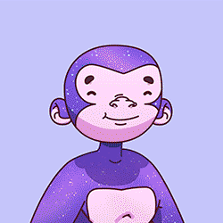 Just Ape NFT Collection Official 只是猿。10,000 只 Apes 的集合，让我们回归基础。没有绒毛，所有的价值。 ▶ 什么是Just Ape NFT Collection Official？ Just Ape NFT Collection Official 是一个 NFT (Non-fungible token) 集合。存
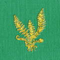 Legend of the Vampire Fern 吸血鬼蕨的传说是在靛蓝紫色吸血蕨消失之后发生的，这是一种在相机上看不到的超自然植物。不仅如此，蕨类植物对每个看到它的人来说都是独一无二的。来
LegionOfWitches Legion of Witches 是 10,000 个受流行文化、神秘巫术、动漫和魔法游戏影响的独特审美手绘生成角色。 法术、魔药和仪式是多维军团元宇宙存在空间中的超自然领域。 LegionOfWitches NFT - 常
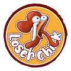 LoserChick-TrumpChick 一枪 规则 您可以选择多个 Trump NFT 参与竞选。 3 个 Trump NFT 将从所有参与的 Trump NFT 中随机抽取。 这 3 个 Trump NFT 的所有者将成为获胜者（每个地址一次只能获得一个奖品）。 获
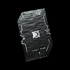 METAVS Vault Pass METAV 是一个 2.5D 沙盒和 Web 3.0 平台，内置于浏览器中。该游戏将在所有带有网络浏览器的设备上可用。我们的目标是为基于 NFT 的沙盒游戏创建最简单、无代码的解决方
Mint Pass by NFTMagazine.com NFTMagazine.com 统计的 Mint Pass 创建于 2 个月前 1 代币供应 5% 费用 NFTMagazine.com 的 Mint Pass NFT 在过去 7 天内售出 1405 次。NFTMagazine.com 的 Mint Pass 总销售额为 12.25 万美元。NFTMa
MUMBOT METAPHYSICALS met·a·phys·i·cal /ˌmedəˈfizək(ə)l/超越物理物质或自然法则。MUMBOT METAPHYSICALS 为与物理收藏品捆绑的 NFT 版本部署的新智
Mutant Shiba Club Mutant Shiba Club 是 10,000 个动画 NFT 的集合。每个 NFT 都是独一无二的，并且驻留在以太坊区块链上。您的 Mutant Shiba Club NFT 将成为您的俱乐部会员资格。变种人芝俱乐部| MSC NFT - 常见问
My Little Devils 我的小恶魔统计 创建于 4 个月前 7 代币供应 10% 费用 过去 7 天没有售出任何 My Little Devils。 《我的小恶魔》是手绘 pfp 合集。 ▶ 什么是我的小恶魔？ My Little Devils 是一
NFT World of Men NFT 男人世界 more_horiz 5,000 个代表男性的独特 NFT，其独特目的是支持心理健康和癌症。 WOM 持有者可以获得独家赠品、AMA、体验等。访问 worldofmen.xyz 铸造你的男人。 50% 的销售
Nick Bng Editions Nick Bng 版本 NFT - 常见问题（FAQ） ▶ 什么是 Nick Bng 版本？ Nick Bng Editions 是一个 NFT（非同质代币）集合。存储在区块链上的数字艺术品集合。 ▶ 有多少个 Nick Bng Editions 代币？
Ocean Veins Aerial Editions 海洋是地球上所有生物的命脉，它的波浪是将我们联系在一起的脉络。 作品名：海洋静脉 版本：55艺术家：TimmbosliceOcean Veins 是 Tim B.过
PA Club (PAC) [第 2 阶段铸币厂的第 1 批现已上线。] 加入 discord 以获取完整信息。PA 俱乐部 (PAC) 是一个独特的 NFT 集合，您的 PAC 解锁了许多实用程序，包括每周访问 PA（Psy
Pennies From Heaven .10 版的 99 版 -David 没人，你的控制论管家是一分钱。 来自天堂的便士喷泉倾泻在这个可怜的灵魂上，如果可以的话，抓住它！ 30,000 便士落到了他的身上。 节省一分钱就
Pixel Doodle Kongz 如果您不属于能够负担得起 BAYC、Cool Cats、Doodles 或 CyberKongz 的少数收藏家或鲸鱼，您可能已经发现了一些被称为衍生品的新兴收藏品。简而
PUMA Nitro Token PUMA 拥有和运营的第一个 Nitro NFT 项目展示了该品牌的未来，将 4,000 个 NFT 分为两种设计， 和 。考虑到 Metaverse 开发，这两个项目将解锁访问 PUMA 的 Web3 社区、高级体验和掉落。任何
PUMA Nitro Token OFFICIAL PUMA 拥有和运营的第一个 Nitro NFT 项目展示了该品牌的未来，将 4,000 个 NFT 分为两种设计， 和 。考虑到 Metaverse 开发，这两个项目将解锁访问 PUMA 的 Web3 社区、高级体验和掉落。任何
Pumpkids Pumpkids 是 5000 个可怕的南瓜手工制作和算法生成的最恐怖的 NFT集合 我们的第一个赠品！我们很高兴庆祝 Discord 服务器上线并拥有近 100 名成员。 我们决定免费提供我们所


l/超越物理物质或自然法则。MUMBOT METAPHYSICALS 为与物理收藏品捆绑的 NFT 版本部署的新智能合约。")